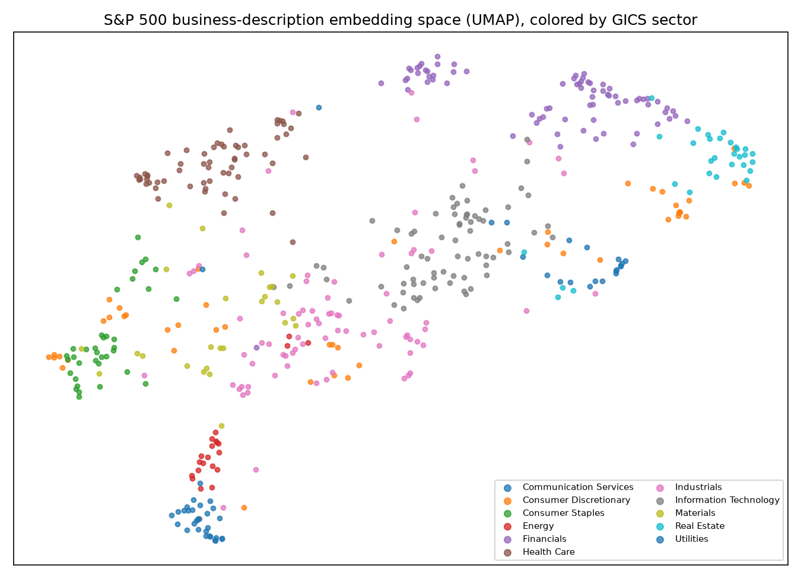

Project
Hekir: Do Sector Labels Match What Companies Actually Do?
Every company in the S&P 500 gets a GICS sector label, like Energy, Utilities or Information Technology. Investors lean on these labels constantly: to pick comparable companies, to build benchmarks, and to decide what a stock "should" move with. I wanted to know whether the labels actually line up with how companies describe their own businesses.
So I took the business description of all 499 companies (merging dual share classes like GOOGL and GOOG), turned each one into a vector with a sentence-embedding model, and for every company pulled the 10 companies whose descriptions were closest to it. Then I counted how many of those neighbors stayed in the same sector, and compared that against 10,000 runs where the sector labels were shuffled randomly.
The short answer is that the labels mostly hold up. About 66% of nearest neighbors share the company's sector, against roughly 11% by chance. That varies a lot by sector, though, which is what the chart below shows. Utilities and Energy companies describe themselves in very similar language, while Industrials and Consumer Discretionary are much looser groups.
I also checked whether the description-based peers actually move together in the market. They do, a bit more than same-sector peers (an average daily-return correlation of 0.335 versus 0.275). The part I found most interesting was the 83 companies that looked "misplaced." For them, that advantage disappears completely, so the disagreement doesn't mean GICS got them wrong. Not the headline I was hoping for, but it's the honest one.
Sector cohesion, measured against chance
How many times more often a company's 10 nearest peers share its sector than random labels would predict.
How it works, step by step
- Pull the S&P 500 list and each company's business summary.
- Embed every summary with the
all-MiniLM-L6-v2model, splitting long summaries into chunks and averaging them. - Find each company's 10 nearest neighbors by cosine similarity.
- Compare the sector overlap against 10,000 random shuffles of the sector labels.
- Test co-movement using a year of daily returns (July 2025 to June 2026).

Hekir started as a homework assignment for another class. I designed the study and made the calls on what the results mean; the code was written with Claude Code. Full write-up and code: github.com/Nalomun/hekir.